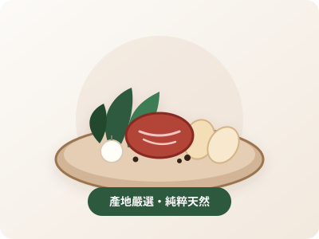
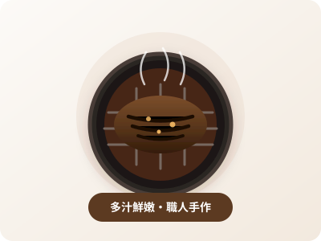
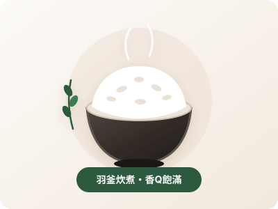

特色一
嚴選優質食材
精心挑選新鮮食材，注重每一道料理的品質。產地直送鮮蔬與合格安心肉品，從源頭把關健康。
在「哈基米挽肉」，我們相信真正撫慰人心的料理，來自對食材的敬意與細膩的料理工藝。我們不使用人工添加物，堅持每一份肉排都在客人眼前現煎現烤，鎖住最豐富的天然肉汁。
以熱騰騰的白米飯為底，鋪上滋滋作響的炭火漢堡排，交織出純樸而深厚的美好日常。
從清晨原塊肉的黃金配比切分、手工拍打排氣，到專用羽釜鍋的大火炊煮，每一個步驟都傾注了職人的專注心意。
無論是匆忙的午餐時光，或是犒賞自己的溫馨晚餐，我們都希望每一口都能讓您品嚐到安心、溫度與滿足感。
回歸食材的原點，以嚴謹態度打磨每一個細節，呈現最富層次的味覺饗宴。

精心挑選新鮮食材，注重每一道料理的品質。產地直送鮮蔬與合格安心肉品，從源頭把關健康。

用心製作香嫩多汁的漢堡肉排，呈現豐富口感。黃金比例手工拍打，高溫煎烤牢牢鎖住香濃肉汁。

搭配口感絕佳的米飯，打造營養又滿足的一餐。特選在地好米配合羽釜炊煮，米粒晶瑩清甜有彈性。